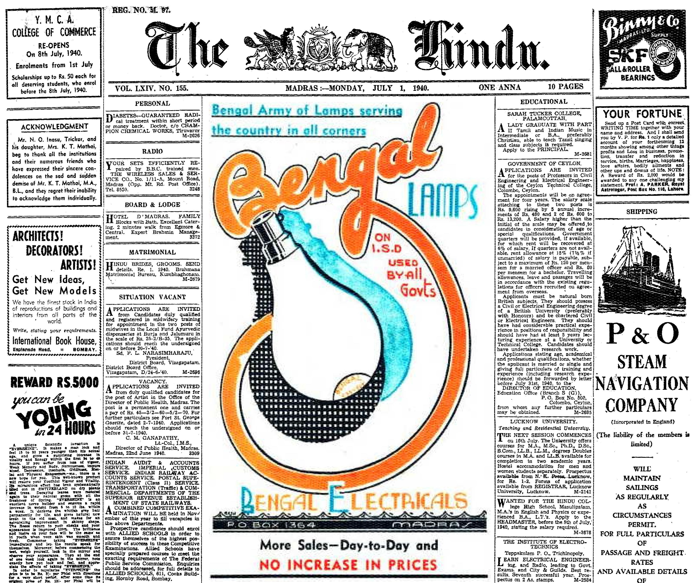

The Hindu is launched as a weekly in 8 pages demi-quarto size, thereafter becoming a tri-weekly and a daily. Teachers G. Subramania Aiyer and M Veeraraghavachariar, and four law students get together with a rupee and three-quarters as capital
-
1878 September 20
-
1889 April 1
The nascent spirit of Indian nationalism lifts the mission, but it takes 11 years for the newspaper to go six days a week, on April1,1889. In October 1893, page level goes up to 12.
-
1897 September 15
A photograph is printed, of ‘Bala Gangadar Tilak of Pune’ (arrested for falling foul of the British government through his writings). Photography came to India in the early 19th century, but a photograph in a newspaper was a stride.
-
1903 September 21
The Hindu celebrates its silver jubilee at 100 Mount Road. Over 400 guests, Indian and European, attend, and Editors of other newspapers speak. G. Subramania Aiyer, who ceased to be its Editor in 1898, speaks.
-
1905 April 1
S. Kasturiranga Iyengar buys The Hindu from Veeraraghavachariar, becoming editor and proprietor. C. Sankaran Nair and T Rangachari are partners but they eventually withdraw. Content is upgraded and page level rises to 18.
-
1921
Rotary press capable of printing 30,000 copies in 24 pages installed
-
1923
A battery of composing machines installed. Quicker transmission of news by telegram and cable, and swifter deliveries. Circulation reaches 17,000. On March 23, Gandhiji visits the office to unveil a portrait of Kasturiranga Iyengar
-
1928
In the eventful golden jubilee year, among other markers of development, linotype machines come in, and the Sunday edition is launched, in tabloid size, as The Hindu Illustrated Weekly, at Annas 4
-
1929 January 6
Goes seven-days-a-week on a regular basis.
-
1933
Offices opened in London, Bombay and Calcutta. (In November 1952, the office in Bombay moved to Kasturi Building on Jamshedji Tata Road.)
-
1939 Nov 24
A week before the outbreak of World War II, moves to Kasturi Buildings, on Mount Road, Madras. Becomes the first Indian newspaper to have a P&T teleprinter line in its own office No more cycle-borne messengers from the Telegraph Office
-
1940 November 7
Becomes a morning daily, catering to growing news consumption demands, and meeting late-evening war-front news despatch deadlines
-
1940
First use of colour on pages (‘spot colour’) for advertisements. In another 59 years, on November 6, 1999, colour printing on a limited number of pages and in some editions, would begin for editorial matter, including pictures
 -
1947 April 11
Start of transportation of copies by air. In 1962 it would first utilise a special Indian Airlines service to fly copies to three centres, and in 1963, acquire an aircraft of its own, for early morning deliveries across a wider swathe
-
1947 September 10
Sport & Pastime launched, in a first step in offering a diversified bouquet of products
-
1949 April
First newspaper in India to have tele printer links among multiple offices (Madras-Bombay, Delhi-Bombay)
-
1965
The Times (of London) rates The Hindu as one of the world’s 10 best newspapers, terming it a “national voice with a southern accent” This turned out to be a precursor to the World Press Achievement Award in 1968
-
1966 April 30
Madras linked by OCS Radiophoto network, with the receiving facility less than a kilometre away for The Hindu, aiding quick transmission and use of outstation photographs (in hard copy, black and white mode)
-
1969 July 27
First-in-country use of facimine technology adapted to indigenous means, to transmit page images from Madras through co-axial cables to the centre where it is to be printed (Coimbatore edition launched)
-
1970 March 27
Bangalore facsimile edition, serving Mysore State and parts of Andhra Pradesh, first edition outside of Madras State
-
1978 September 4
President N. Sanjiva Reddy at the newspaper’s Centenary celebration event in Madras, attended, among other prominent leaders, by Chief Minister M.G. Ramachandran. Earlier in the year, on July 15, The Sportstar weekly is launched
-
1980 December 7
Use of computer-aided photocomposing in the main section, a first for a mainline newspaper in India. The transition from hot metal composing technology was achieved smoothly, with the existing personnel re-skilled
-
1984 November
Launch of Frontline, the fortnightly, with quality, both technically and editorially, as the watchword

-
1994 January 28
Launch of The Hindu BusinessLine, putting together full-fledged reporting-editorial teams. Today it is printed in 16 centres
-
1996 June
Becomes first Indian newspaper to start an online version, put out as a weekly package with select content from the print edition
-
2003 September 13
Prime Minister Atal Behari Vajpayee presides over 125th anniversary event in Chennai, which is followed by events in Bangalore, Hyderabad and Thiruvananthapuram where the respective State Chief Ministers preside
-
2006 September 10
On subscription basis, e-paper versions, providing replicas of the printed pages and allied services, launched, for Chennai, Hyderabad and Delhi editions
-
2013
Enter the apps. The Hindu - Android in May, iOS in Dec; BusinessLine - Android in Sept, iOS in Dec.
-
2013 September 16
Group launches Tamil language daily broadsheet newspaper; its title changed later to Hindu Tamil Thisai
-
2016 August
Group launches Standardised Test of English Proficiency (STEP), chiefly in online mode, aiding the sharpening of English language skills for those who need assistance
-
2019
Paywall introduced for digital products across all Group editorial offerings, rationalising access.
-
2021 May
App introduced for The Hindu e-paper, both Android & iOS
-
2022 August
App for BusinessLine e-paper, Android & iOS
-
2023 July
Apps for Frontline and Sportstar, both Android & iOS